Manual do BLUXXY
Tudo o que o app faz, tela por tela
Do primeiro acesso aos planos pagos: como navegar no mar, mandar ondas, conversar, entrar em ilhas, cuidar da sua privacidade e para que serve cada botão. Toque nos pontos numerados das telas para ver a explicação de cada um.
Tour guiado
Um passeio pelo app de verdade, botão por botão. Use as setas, toque em Próximo ou deixe no automático.
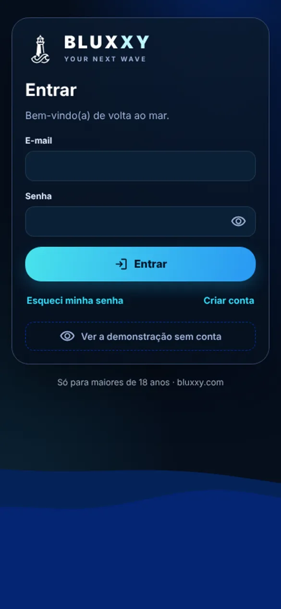
Passo 1 de 20
Entrar no BLUXXY
Carregando…
Primeiros passos
Baixar, criar a conta, confirmar a idade e entrar no mar.
Baixar e instalar
O jeito recomendado: atualiza sozinho e é o único que confirma a idade. Enquanto o app está em teste, peça acesso no grupo da comunidade e toque em Tornar-se testador.
Instalação direta pelo site. O celular pede para permitir instalar pelo navegador. Para a confirmação de idade, use a versão da Google Play.
Baixe o .exe e execute. Se o SmartScreen avisar, toque em Mais informações › Executar assim mesmo.
Instale o .deb pela central de programas ou com sudo apt install ./bluxxy.deb.
Ir para a página de download →
Criar a conta
- Criar conta com e-mail e senha (ou Continuar com Google no Android). A senha precisa ter pelo menos 8 caracteres.
- Confirme o e-mail: chega um código de 6 números. Digite no app.
- Aceite os termos e a política de privacidade. Dados de saúde e identidade são sempre opcionais.
- Permissões: só a localização aproximada é obrigatória (veja a seção Permissões).
- Confirme que tem 18 anos ou mais pela Google Play (abaixo).
- Complete o perfil: nome, data de nascimento e, se quiser, uma foto. Pronto: você está no mar!
- E-mail e senha — os mesmos no celular e no computador.
- Entrar — se esquecer a senha, use Esqueci minha senha logo abaixo.
Confirmar 18+ (ECA Digital)
O BLUXXY é só para maiores de 18 anos. Pela lei brasileira (ECA Digital), a idade precisa ser confirmada de forma confiável — marcar "tenho 18 anos" não vale. Por isso usamos a faixa de idade da sua conta Google, informada pela própria Google Play.
- O BLUXXY recebe só a faixa (por exemplo, "18 ou mais"). Nunca a data de nascimento nem documentos.
- A Google Play confirma também que o app é o oficial e que o aparelho é íntegro (Play Integrity).
- Se aparecer "idade só declarada", confirme a idade na sua conta Google (documento, cartão de crédito ou identidade digital) pelo botão Confirmar idade na conta Google e tente de novo.
- No computador, a confirmação é feita uma vez no app Android; depois é só entrar pelo QR Code.
- Confirmar pela Google Play — abre a janela da Play pedindo para compartilhar a faixa de idade.
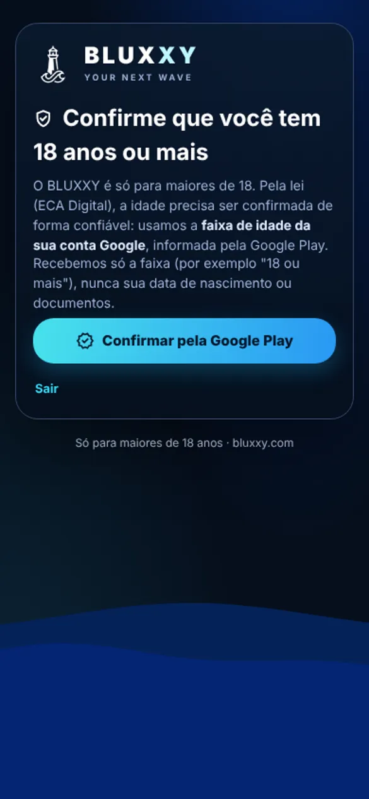
No computador
O mesmo mar, em tela grande. Você entra lendo um QR Code com o celular.
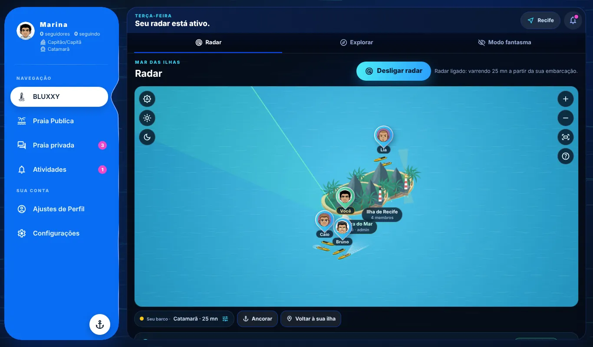
- Abra o BLUXXY no computador: aparece um QR Code que vale por 3 minutos.
- No celular, vá em Ajustes de Perfil › Conta e segurança › Entrar no computador e toque em Ler QR.
- Aponte para a tela e confirme. O computador entra sozinho, com uma sessão própria guardada no cofre do sistema.
Tudo o que você faz no computador aparece no celular e vice-versa. As compras e o nível valem na conta, então também aparecem no computador. Para gravar áudio no computador, o sistema pode pedir para liberar o microfone. Por segurança, fotos e vídeos das conversas abrem só no celular — no computador aparecem borrados.
Início: o mar e o radar
A tela principal. Barcos são pessoas, ilhas são grupos.
- Região — sua cidade/área aproximada. Toque para trocar (pelo GPS ou escolhendo o município).
- Notificações — ondas, mensagens, pedidos e avisos das ilhas.
- Radar · Explorar · Modo fantasma — as três abas do Início.
- Ligar / Desligar radar — com o radar desligado, só você e a sua ilha aparecem no mar.
- O mar — arraste para navegar, use + e − para zoom. Toque num barco para ver a pessoa, numa ilha para ver o grupo. O seu barco navega até lá desviando das ilhas.
- Seu barco — a embarcação que você escolheu e o alcance do radar em milhas náuticas (mn).
- Ancorar — para o barco onde está. Voltar à sua ilha leva você de volta.
- No seu radar — a lista de embarcações e ilhas no alcance. Puxe para abrir.
- Barra de baixo — Início, Praia, Atividades, Privada e Perfil.
A lista do radar
Cada pessoa aparece com nome, idade, nível, embarcação e a distância aproximada (em degraus de 500 m). Direto da lista você manda uma onda, chama para conversar ou vê a pessoa no mar.
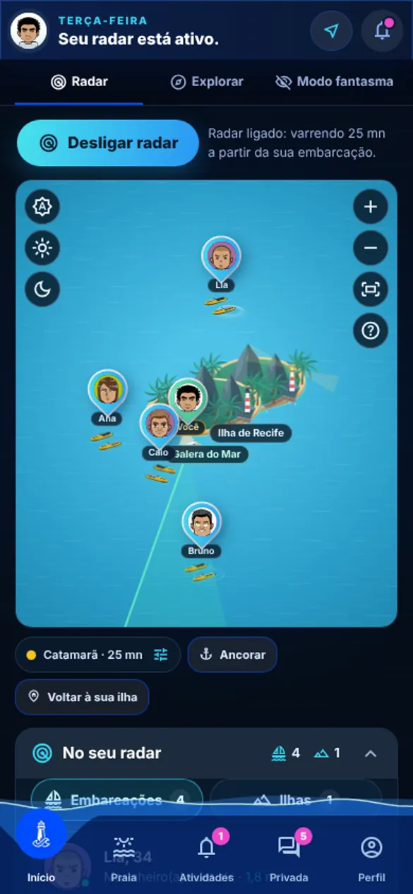
Embarcações e níveis
Quanto maior a embarcação, mais longe o seu radar alcança.
Ilha 1 · Lagoa
Ilha 2 · Píer
Ilha 3 · Montanha
Ilha 4 · Floresta
- Todo mundo ganha +5 mn de bônus grátis. Itens pagos (Mar Aberto, Maré cheia) somam mais alcance — veja Planos.
- O nível libera embarcações e modelos de ilha maiores. Você pode navegar com uma embarcação menor se quiser um radar mais local.
- Troque em Ajustes de Perfil › Alcance do radar e nível ou tocando no chip Seu barco no mar.
- 1 milha náutica = 1,852 km. 5 mn ≈ 9 km · 10 mn ≈ 18,5 km · 20 mn ≈ 37 km · 50 mn ≈ 93 km.
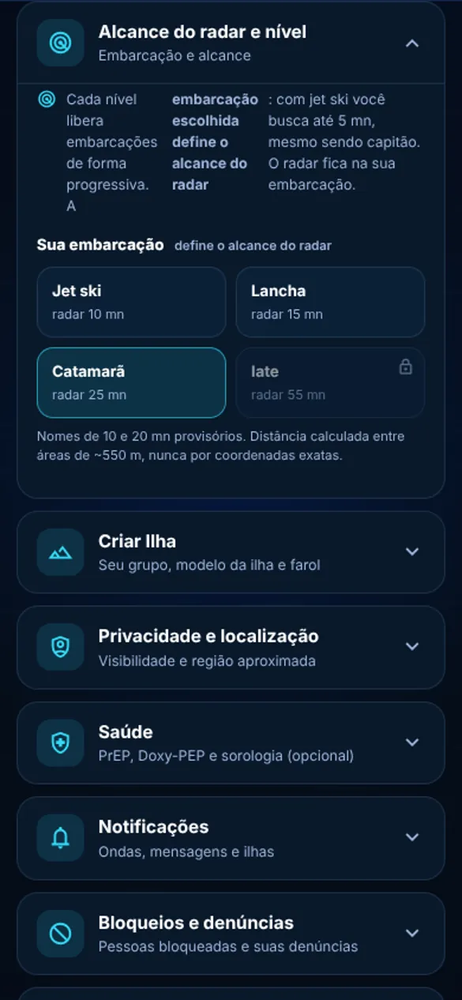
Cartão do tripulante
O que aparece quando você toca numa pessoa.
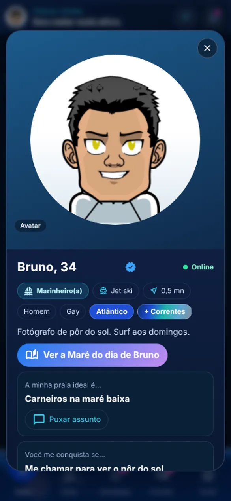
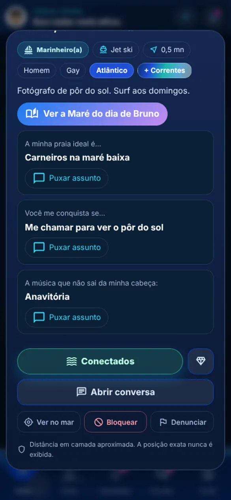
- Fotos e avatar — deslize para ver as fotos públicas. Sem foto, aparece o avatar desenhado da pessoa.
- Selo azul — perfil verificado por selfie pela equipe BLUXXY.
- Online — ou "visto há…", se a pessoa permitir.
- Ver a Maré do dia — aparece quando ela postou algo nas últimas 24 h.
- Perguntas do perfil — respostas para puxar assunto.
- Puxar assunto — manda um pedido de conversa já com uma mensagem sobre aquela resposta.
- Onda 🌊 — um "oi, curti você". Se a onda voltar, vira conexão.
- Salvar (💎) — guarda a pessoa em Navegadores salvos.
- Chamar para conversar / Abrir conversa — com conexão a conversa abre direto; sem conexão, vira um pedido.
- Ver no mar — mostra o barco da pessoa no mapa.
- Bloquear — vocês somem um para o outro em todo o app.
- Denunciar — vai para a equipe de moderação, com prioridade para casos graves.
Ondas e conexões
O jeito BLUXXY de dizer "curti você".
- Recebidas: quem mandou onda para você. Toque em Devolver para conectar.
- Enviadas: as suas ondas. Mudou de ideia? Retirar desfaz.
- Desfazer uma conexão encerra a conversa para os dois.
- Recebidas — ondas que chegaram para você.
- Enviadas — as ondas que você mandou.
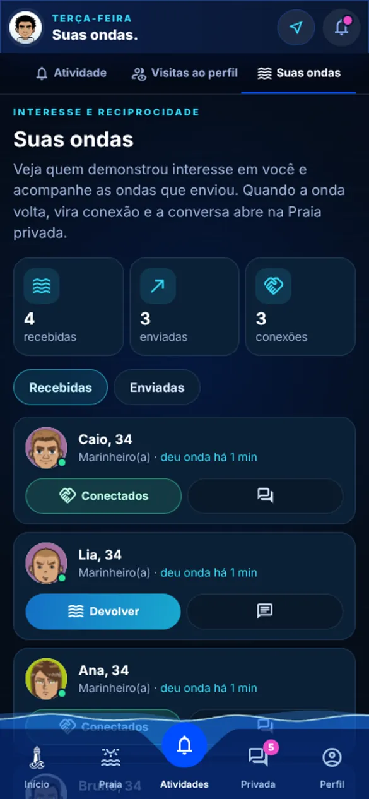
Explorar e modo fantasma
Descobrir gente nova — ou navegar sem ser visto.
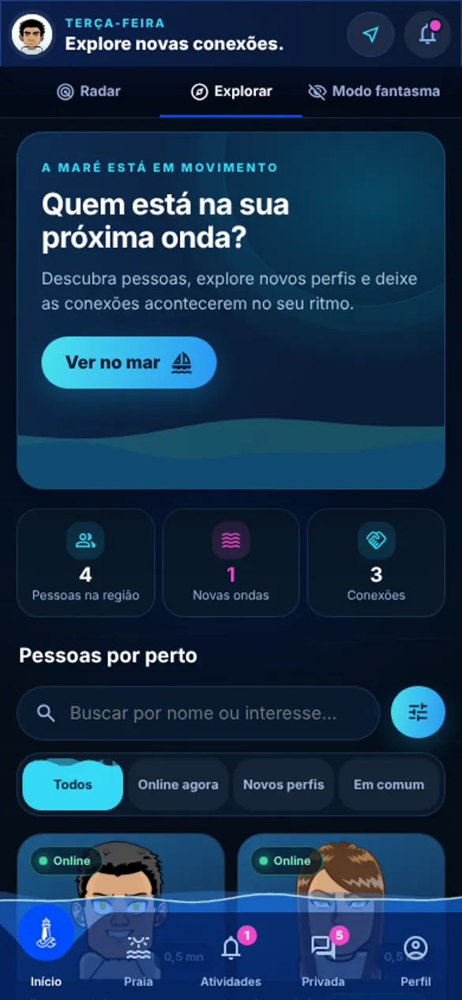
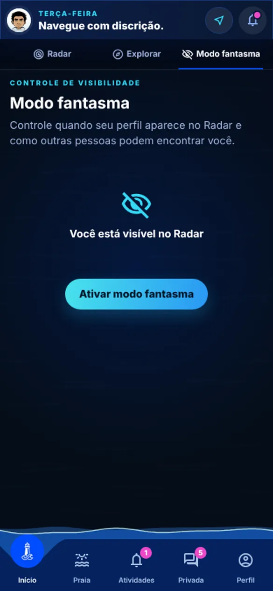
Explorar
Grade de pessoas por perto com filtros: Todos, Online agora, Novos perfis e Em comum, além de busca por nome ou interesse e filtros de idade, corpo e posição.
Modo fantasma
Ligado, você some do radar e das buscas dos outros, mas continua vendo o mar. Suas conversas continuam normais. Desligue quando quiser voltar a aparecer.
- Ativar modo fantasma — um toque liga, outro desliga.
Praia e Maré do dia
O feed público do BLUXXY.
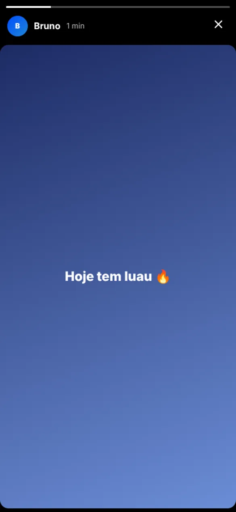
- Maré do dia — fotos e textos que somem em 24 h. Toque em Sua maré (+) para postar; o anel colorido indica maré nova.
- Buscar pessoas ou publicações.
- Filtrar por cidade.
- O que está rolando — escreva, anexe foto ou vídeo.
- Quem pode ver — todos ou só quem segue você.
- Publicar.
- Feed — curtir, comentar, repostar e salvar. Abas Publicações · Seguindo · Perfil no topo.
Maré do dia
- Quem vê: suas conexões e quem segue você.
- Toque na direita para avançar e na esquerda para voltar. Cada item fica 6 segundos.
- Na sua maré, Quem viu mostra quem assistiu, e dá para apagar antes das 24 h.
- Até 15 marés por dia. Texto sobre fundo colorido (8 cores) ou foto.
Atividades
Tudo o que aconteceu com você.
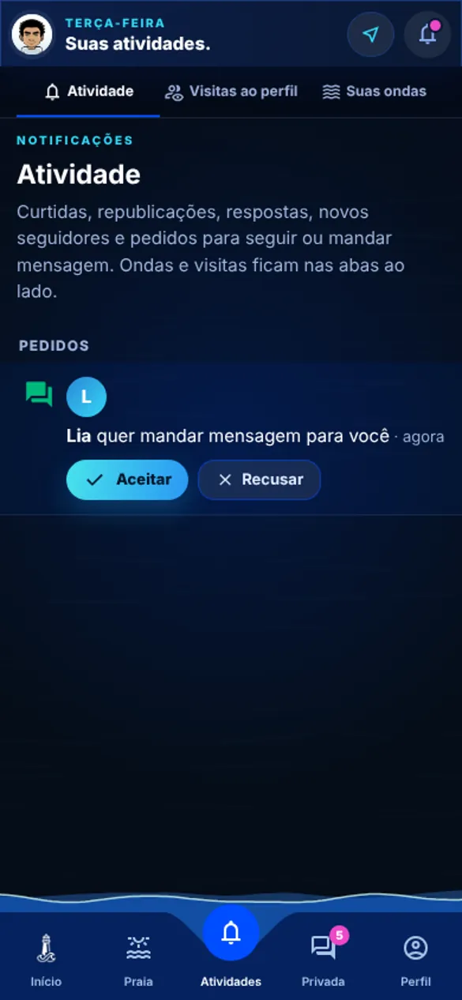
- Atividade: curtidas, repostagens, respostas, novos seguidores e pedidos (para seguir ou conversar). Aceite ou recuse direto daqui.
- Visitas ao perfil: quem passou pelo seu cartão. Você também aparece nas visitas dos outros — desligue em Privacidade › Aparecer nas visitas.
- Suas ondas: recebidas, enviadas e conexões (veja Ondas).
Praia privada: conversas
Mensagens 1:1 com quem é sua conexão.
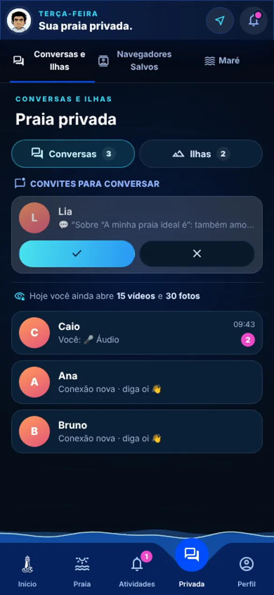
- Convites para conversar — ✓ aceita, ✕ recusa. Quem "puxou assunto" já chega com a mensagem.
- Conversas e Ilhas — as duas listas da Praia privada.
- Cota de mídia — quantos vídeos e fotos você ainda pode abrir hoje.
- Opções — liberar fotos privadas, apagar a conversa, bloquear ou denunciar.
- Mensagens — ✓ enviada, ✓✓ lida. Toque duas vezes (ou segure) numa mensagem para reagir: ❤️ 😂 😮 😢 🔥 👍.
- Anexar — foto ou vídeo de visualização única: abre uma vez e some.
- Escreva — a outra pessoa vê "digitando…".
- Áudio — toque para gravar (até 2 min) e toque de novo para enviar. Esc cancela no computador.
- Enviar.
Ilhas
Os grupos do BLUXXY: a praça da sua cidade e as ilhas criadas pela comunidade.
- Existe uma para cada município, sem dono. Ninguém destrói, reseta ou expulsa.
- Quem está na cidade entra com um toque (botão Entrar).
- As mensagens somem sozinhas depois de 7 dias, uma a uma.
- Quem tem o selo de verificado pode marcar encontros.
- Moderação pela equipe BLUXXY: denuncie pelo cartão da pessoa.
- Você cria com o Direito de criar ilha (compra única, veja Pagamentos).
- Entrada: aberta (entra direto) ou por pedido (você ou um admin aprova).
- Aparece no radar de quem está no alcance, com o farol aceso.
- Convite: um código para chamar gente de qualquer lugar — você troca ou desliga quando quiser.
- Admins, banimentos, encontros e a imagem da ilha (Lagoa, Píer, Montanha, Floresta) conforme o seu nível.
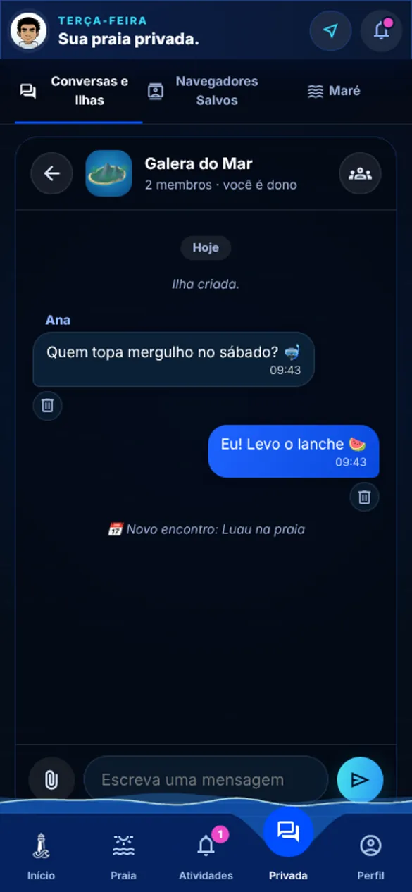
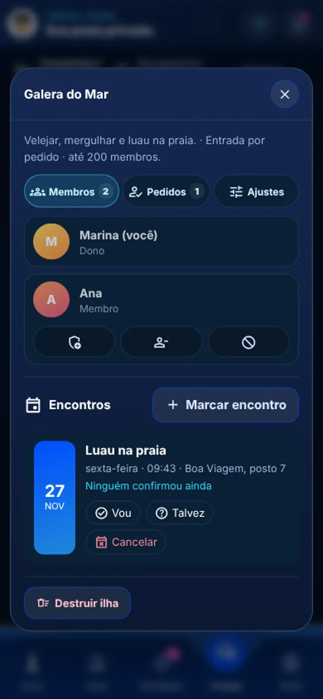
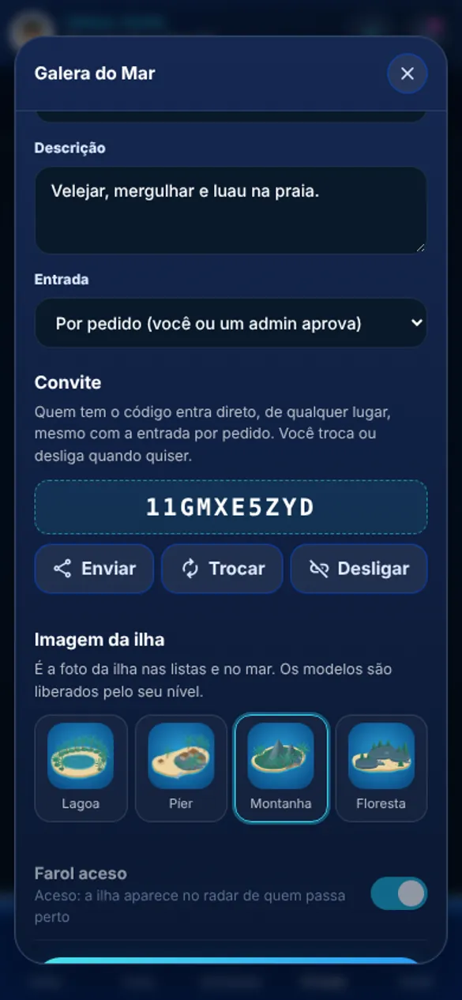
- Ilha da sua cidade — selo CIDADE; a imagem é um dos 4 modelos de ilha.
- Entrar com código — use o convite que o dono de uma ilha mandou.
- Gerenciar — membros, pedidos, ajustes, encontros, sair.
- Mensagens do grupo — avisos do sistema aparecem em itálico (entradas, encontros).
- Membros — tornar admin, remover ou banir (dono e admins).
- Pedidos — aprovar quem pediu para entrar.
- Ajustes — nome, descrição, entrada, convite, imagem e farol.
- Encontros — marque data, hora e local; os membros respondem Vou ou Talvez.
- Destruir ilha — só o dono, só na ilha própria.
- Convite — Enviar, Trocar (o antigo para de valer) ou Desligar.
- Imagem da ilha — vira a foto do grupo nas listas e no mar.
- Farol — apagado, a ilha some do radar dos outros.
Seu perfil
Em Ajustes de Perfil, cada seção abre e fecha. Um perfil completo recebe muito mais ondas.
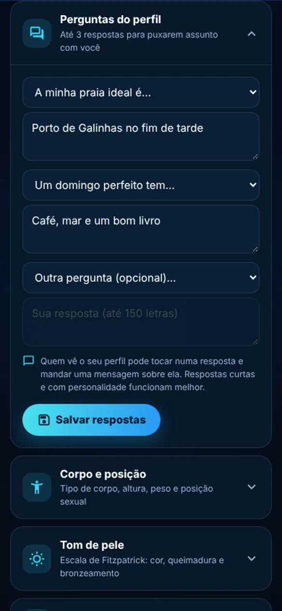
- Sua foto — toque para ver ou trocar. Recorte redondo automático.
- Nível e embarcação.
- Seu perfil está X% completo — atalhos para o que falta.
- Ajuda — refazer o tour ou abrir este manual.
Até 3 fotos públicas e 6 privadas (só abrem para quem você liberar na conversa). Capa do perfil de praia separada.
Seu boneco desenhado: rosto, cabelo, roupa, acessórios e tom de pele pela escala de Fitzpatrick. Aparece quando você não tem foto.
Até 3 respostas (de 10 perguntas) para os outros tocarem em Puxar assunto.
Tire uma selfie fazendo o gesto sorteado. A equipe compara com suas fotos, aprova e apaga a selfie. O selo azul aparece no seu cartão.
Atlântico, Pacífico, Índico… são os seus grupos de identidade e preferência. Você escolhe onde busca e quem pode te encontrar.
Gênero, sexo, orientação, corpo e posição — cada item com a opção de mostrar ou esconder.
PrEP, Doxy-PEP e sorologia: totalmente opcionais e só aparecem se você quiser.
Escolha o que avisa: ondas, mensagens, ilhas. Com o app fechado, o aviso mostra só o nome, nunca o conteúdo.
Veja e desfaça bloqueios e acompanhe suas denúncias.
E-mail, senha (o código de troca chega por e-mail), sessões, entrar no computador e excluir a conta (também pelo site, em excluir conta).
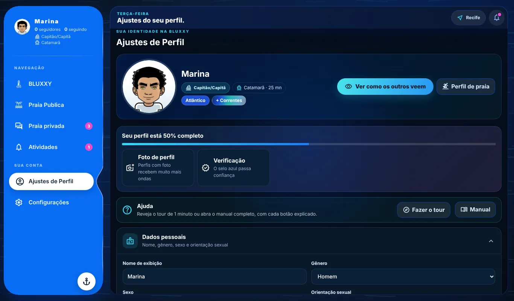
Privacidade e segurança
Você decide o que mostrar — e o app protege o resto.
- Localização aproximada: o aparelho calcula uma área de ~550 m; a posição exata nunca sai do celular. Distâncias em degraus de 500 m.
- Aparecer no radar, mostrar distância, online, idade e aparecer nas visitas: cada um tem a sua chave.
- Perfil de praia privado: só seguidores aceitos veem suas publicações.
- Modo fantasma: some do radar com um toque.
- Bloquear: vocês deixam de existir um para o outro. Denunciar: casos graves têm prioridade máxima.
- Proteção contra prints nas conversas e mídias (Android e Windows).
- Mídia de visualização única e limite diário de aberturas.
- Notificações discretas: sem o conteúdo da mensagem.
Mais detalhes na Política de Privacidade e nas Diretrizes da comunidade.
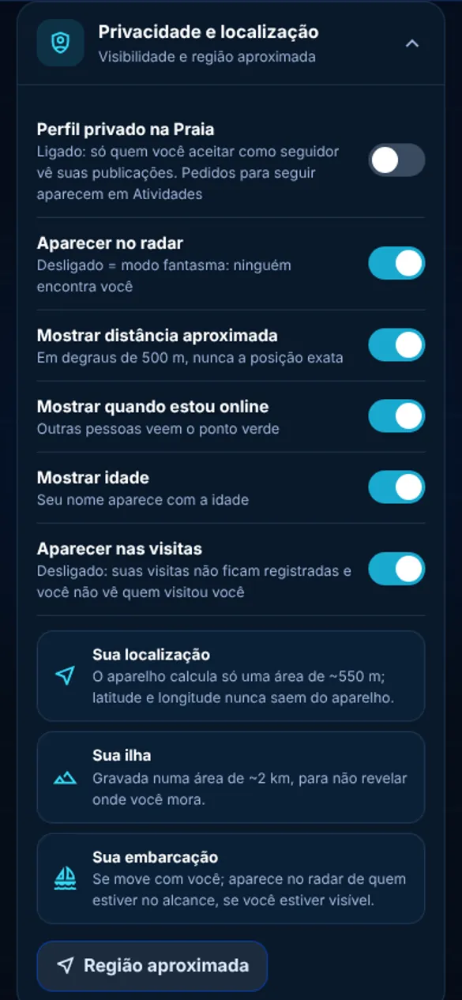
Permissões do celular
O BLUXXY só pede o que usa, na hora de usar.
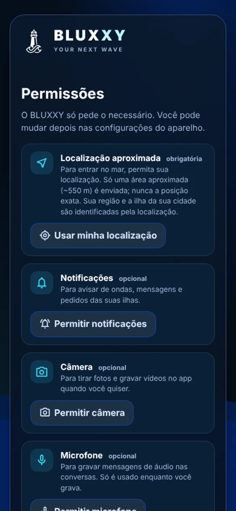
| Permissão | Para quê | |
|---|---|---|
| 📍 Localização aproximada | Achar sua cidade e quem está por perto (~550 m, nunca a posição exata). | obrigatória |
| 🔔 Notificações | Avisos de mensagens, ondas e pedidos com o app fechado. | opcional |
| 📷 Câmera | Fotos, selfie do selo de verificado e Maré do dia. | opcional |
| 🎙 Microfone | Mensagens de áudio (só enquanto você grava). | opcional |
| 🖼 Fotos e arquivos | Escolher da galeria. No Android 13+ usa o seletor do sistema e não precisa de permissão. | opcional |
- Usar minha localização — define a sua região.
- Permitir notificações.
- Permitir câmera.
- Permitir microfone.
Planos e pagamentos
O BLUXXY é gratuito. Os extras são opcionais.
- Radar, ilhas, conversas e Praia
- +5 mn de alcance de bônus
- Sem anúncios
ou R$ 79,90 por ano
- +25 mn de alcance no radar
- Selo Mar Aberto no perfil
- Cancele quando quiser
- +20 mn de alcance
- Vale por 24 horas
- Compre de novo quando acabar
- Uma ilha sua, para sempre
- Convite, admins e encontros
- Selo de apoiador
- Ajuda a manter o app no ar
Como pagar
- Os itens pagos ficam no app Android instalado pela Google Play, em Ajustes de Perfil › Loja.
- O pagamento é feito pela própria Google Play (cartão, Pix, saldo ou boleto, conforme a sua conta). O BLUXXY não vê os dados do seu cartão.
- O benefício entra na hora e vale na conta: aparece também no computador.
Na Google Play: Perfil › Pagamentos e assinaturas › Assinaturas › BLUXXY › Cancelar. Você continua com o Mar Aberto até o fim do período já pago.
Pedidos de reembolso seguem as regras da Google Play (normalmente pelo próprio site da Play, logo após a compra). Algum problema? Escreva para contato@bluxxy.com.
As compras ficam na sua conta BLUXXY e na sua conta Google. Entre de novo e elas voltam sozinhas.
Doações por Pix no site ajudam a manter o servidor, mas não liberam itens no app. Para itens, use a Google Play.
Os valores podem mudar. Vale sempre o preço mostrado na Google Play na hora da compra.
Glossário do mar
As palavras do BLUXXY, em poucas linhas.
- Tripulante
- Qualquer pessoa no app.
- Embarcação
- Seu "barco" no mar. Define o alcance do radar.
- Milha náutica (mn)
- Unidade do alcance. 1 mn = 1,852 km.
- Radar
- Quem está no alcance da sua embarcação.
- Onda
- Um "oi, curti você". Duas ondas = conexão.
- Conexão
- Onda correspondida. Libera a conversa.
- Ilha
- Um grupo com chat, membros e encontros.
- Farol
- Aceso, a ilha aparece no radar dos outros.
- Praia
- O feed público. A Praia privada são as conversas e ilhas.
- Maré do dia
- Fotos e textos que somem em 24 horas.
- Oceanos
- Grupos de identidade e preferência que você escolhe.
- Modo fantasma
- Navegar sem aparecer no radar.
Problemas comuns
As soluções mais rápidas.
"Sua conta Google tem só a idade declarada"
Confirme a idade na sua conta Google pelo botão Confirmar idade na conta Google (documento, cartão de crédito ou identidade digital). Depois feche o BLUXXY, abra de novo e toque em Confirmar pela Google Play. A Play pode levar algumas horas para atualizar.
"A Google Play não respondeu a consulta de idade"
Atualize a Play Store e o Google Play Services, confira se o BLUXXY foi instalado pela Google Play (não pelo APK) e se está na mesma conta Google da Play.
O áudio não grava
Veja em Ajustes de Perfil › Permissões do celular › Microfone. Se estiver Negado, toque em Abrir ajustes e libere. Se outro app estiver usando o microfone (ligação, gravador), feche-o.
Não recebo notificações com o app fechado
Libere as notificações em Permissões do celular e, no Android, desative a economia de bateria para o BLUXXY.
Ninguém aparece no radar
Confira se o radar está ligado, se a região está certa e se o modo fantasma não está ligado. Aumente o alcance trocando de embarcação ou com Maré cheia.
O QR Code do computador venceu
Ele vale 3 minutos. Toque em Gerar outro e leia de novo com o celular.
Não consigo entrar na ilha de outra cidade
A ilha da cidade é para quem está nela. Para ilhas próprias fora do seu alcance, peça o código de convite ao dono.
Perguntas frequentes
O BLUXXY é gratuito?
Sim. Radar, ondas, conversas, ilhas da cidade e Praia são grátis e sem anúncios. Só os extras de alcance, a criação de ilha própria e o apoio são pagos.
Tem para iPhone?
Ainda não. Entre no grupo da comunidade para saber quando sair.
Alguém consegue saber onde eu moro?
Não. O servidor só recebe uma área de ~550 m, e as distâncias aparecem em degraus de 500 m. Com o modo fantasma, você nem aparece.
Os meus dados são vendidos?
Não. O BLUXXY não vende dados nem mostra anúncios. Veja a Política de Privacidade.
Como excluo a minha conta?
No app, em Ajustes de Perfil › Conta e segurança › Excluir conta, ou pelo site em excluir conta. Tudo é apagado do servidor.
Vi um menor de idade ou algo grave. O que faço?
Use Denunciar no cartão da pessoa e escolha o motivo. Denúncias graves entram com prioridade máxima para a equipe.
Ainda com dúvida? Fale com a gente.